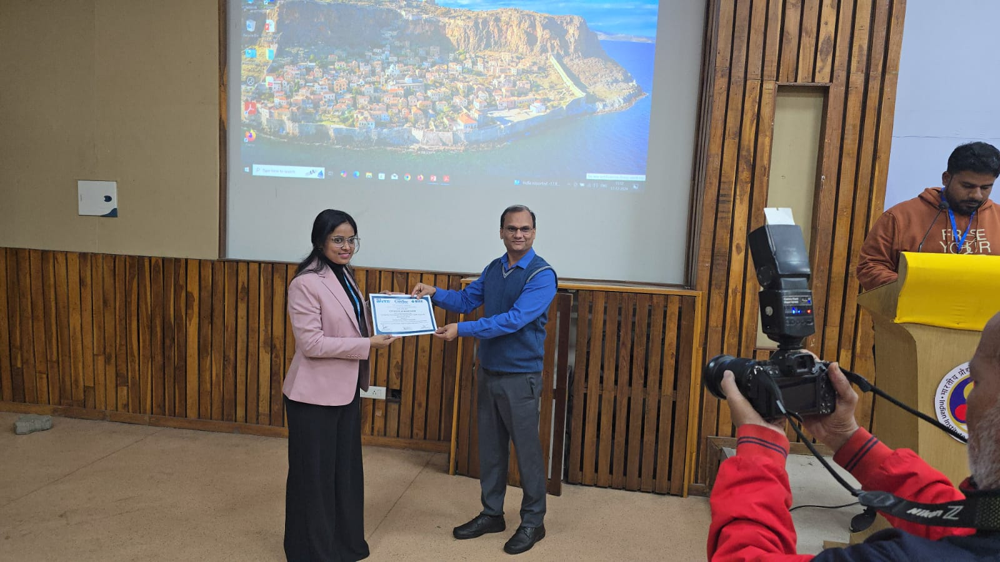
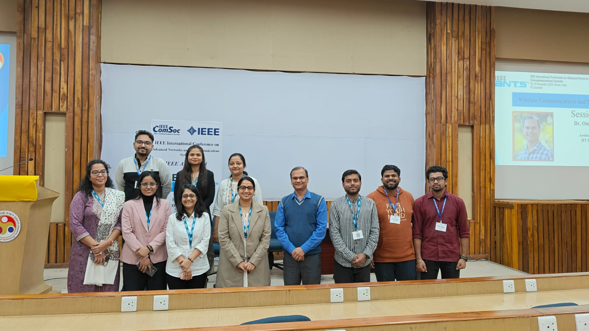
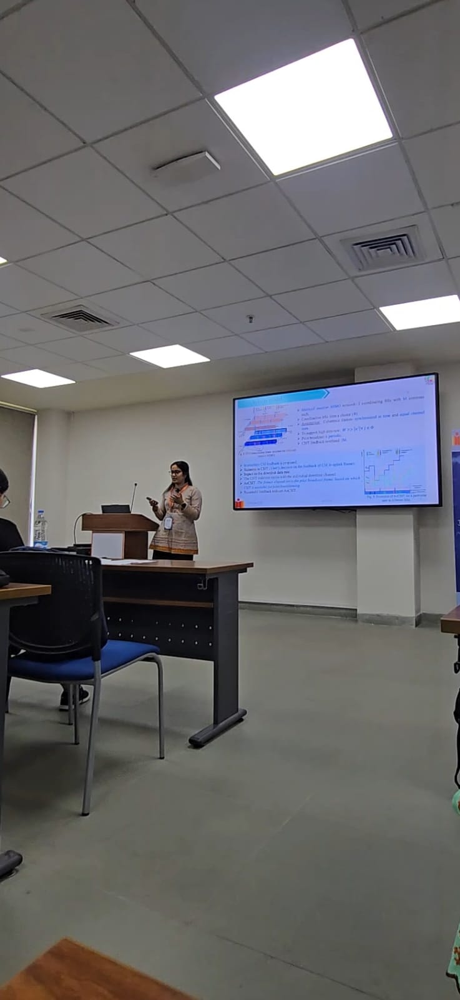
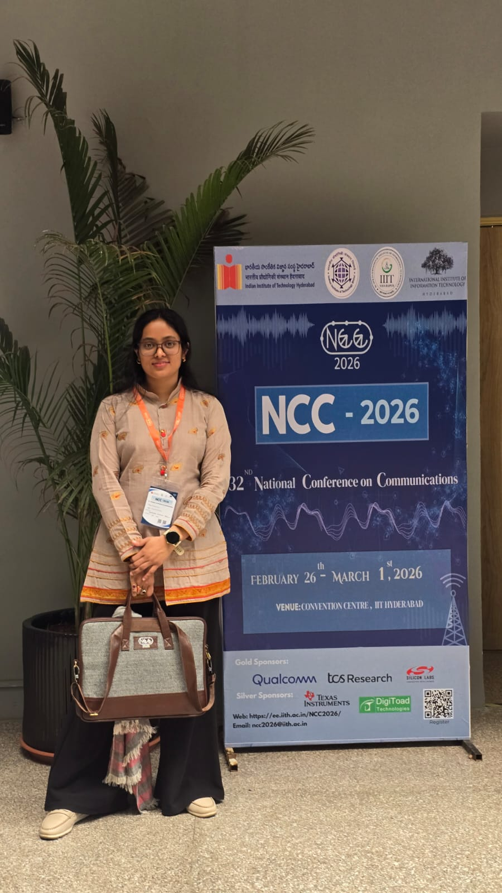

Working in the area of advanced wireless communication systems and signal processing, with a focus on Massive MIMO, Cell-Free Networks and delayed CSIT. Outside the lab, I am also a fitness enthusiast.




My research interests lie in next-generation wireless communication systems, with a focus on Massive MIMO, Cell-Free Networks, statistical signal processing, and delayed channel state information at the transmitter (CSIT). I am particularly interested in developing optimization-driven and signal-processing techniques to enhance spectral efficiency, scalability, and resource management in beyond-5G and 6G networks.
Presented a research paper at the National Conference on Communications (NCC), IIT Hyderabad, 2026.
Presented a research paper at the IEEE International Conference on Advanced Networks and Telecommunications Systems (ANTS), IIT Guwahati, 2024.
The full CV is available on request — click below to view a summary and download link.